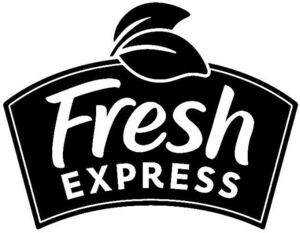

Trade Mark Journal No.2025/050 12 December 2025
WO0000001867392 (29,30,31)
Office of origin: United States of America
Date of International Registration:21 April 2025
Date of designation in the UK:
21 April 2025

The mark consists of the words "FRESH EXPRESS" in a trapezoid surmounted by two stylized leaves.
International priority date claimed: 11 March 2025
(United States of America)
(99077415)
- Class 29
- Precut packaged fresh fruits and vegetables; cut ready-to-serve fresh vegetables; salad kits primarily consisting of precut vegetables or fruits, and also containing salad dressings; salad kit and vegetable kit comprised primarily of packaged precut fresh vegetables and also containing cheese, pasta, prepared meat, croutons, wonton strips, tortilla strips, processed edible seeds and nuts, bacon bits, dried fruits, dried vegetables and salad dressing; packaged fresh vegetables and fruit; vegetable kit consisting of packaged precut fresh vegetables, leafy green vegetables and also containing processed edible seeds and nuts, dried fruits, cheese, pasta, and salad dressing; salad toppings, namely, dried vegetables and fruits.
- Class 30
- Salad dressing; pasta salad; salad toppings, namely, croutons, tortilla strips, wonton strips, rice noodles, sesame sticks, and processed edible seeds used as seasoning or flavoring.
- Class 31
- Fresh vegetables.
Fresh Express Incorporated
Representative: Keltie LLP, No.1 London Bridge London SE1 9BA UNITED KINGDOM